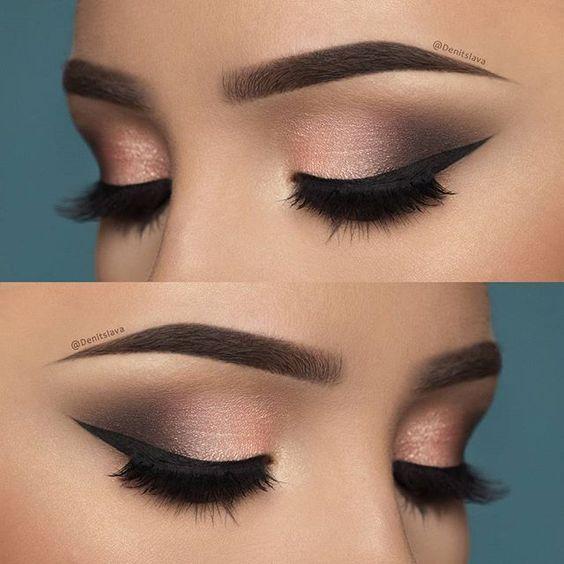

¡Hola Princesas Divinas! 💁♀️
Hoy vamos a sumergirnos en el maravilloso mundo del maquillaje para aprender a lograr esos irresistibles ojos ahumados. Un look que, sin duda, hará que tus ojos se destaquen con todo su esplendor. ¡Vamos a empezar! 💅
Paso 1: Prepárate🌺
Antes de empezar con el maquillaje, asegúrate de que tu piel esté limpia e hidratada. Enorgullécete de tu piel y usa productos que se adapten a tu tipo de piel. ¡Nada como cuidar nuestra hermosa piel antes de aplicar el maquillaje! 🌟
Paso 2: Ojos al Natural 👁️
Comencemos con un lienzo limpio. Aplica un poco de corrector o primer en tus párpados para crear una base uniforme. Esto ayudará a que las sombras se adhieran mejor y duren todo el día o toda la noche, ¡como nos gusta en Colombia! ☀️
Paso 3: Sombra Clara de Inicio ☁️
Usa una sombra de ojos clara en el párpado móvil. Esto ayudará a que las sombras oscuras se difuminen más fácilmente y a que los colores resalten.
Paso 4: Intensifica con Sombras Oscuras ⚫
Ahora, es el momento de intensificar. Escoge sombras oscuras que resalten tus ojos. Tonos como el café, el negro o el gris son perfectos para lograr el efecto ahumado. Aplica la sombra en el pliegue del ojo y en la esquina externa. ¡Dale profundidad y misterio a tu mirada! 🌌
Paso 5: Difumina como una Experta 🖌️
El secreto de un ojo ahumado colombiano es el difuminado. Usa una brocha suave para mezclar las sombras de manera uniforme. Este paso suavizará las transiciones entre los tonos y te dará un acabado de aspecto profesional. 🎨
Paso 6: Eyeliner: Definición Colombiana ✒️
Define tus ojos con un buen delineador. Puedes optar por un delineado sutil o uno más dramático, ¡depende de tu estilo colombiano! Un toque de delineador en la línea de las pestañas hará que tus ojos se vean más grandes y llamativos. 👀
Paso 7: Pestañas de Infarto 🚀
No olvides tus pestañas. Unas pestañas voluminosas son clave para resaltar ese look ahumado. Aplica tu rímel favorito en varias capas para lograr unas pestañas de infarto. ¡Brillarás como las estrellas colombianas! ✨
Paso 8: Cejas: ¡Un Toque Colombiano Final! 💖
Finaliza tu look ahumado con unas cejas bien definidas. Rellénalas con un lápiz o sombra para darles forma y estructura. Las cejas bien arregladas enmarcarán tus ojos y completarán tu impactante look. 👁️🗨️
¡Y ahí lo tienes, hermosa! Un tutorial rápido y fácil para lograr unos ojos ahumados que reflejen el encanto colombiano. ¡Que tu mirada deslumbre en cada rincón de nuestra hermosa tierra! 🌍